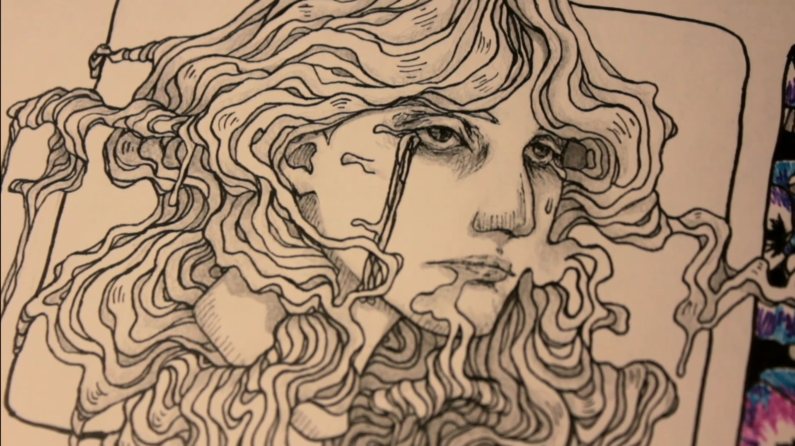
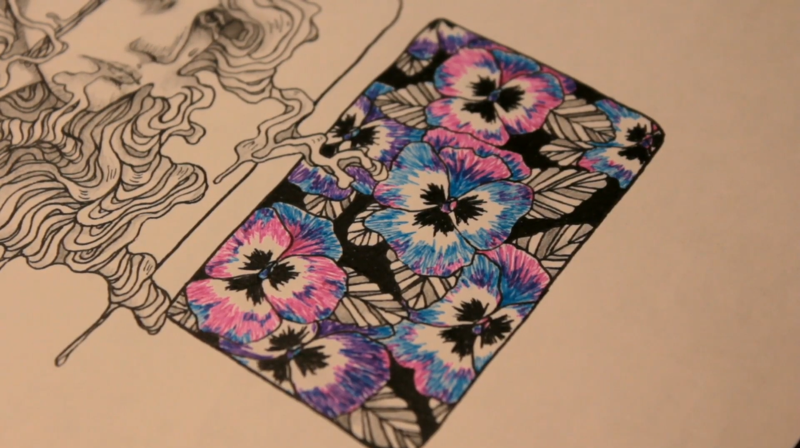

agora
Busco retratar uma certa mudança de perspectiva da personagem sobre um momento ruim.
detalhes
Minha primeira HQ, mais precisamente uma OneShot de 24 páginas que não possui falas. (Não está finalizada, fiquei um bom tempo sem mexer nela).
materiais de pintura utilizados
- Lápis HB;
- Canetas hidrográficas Uni Pin;
- Canetas esferográficas BIC;
- Lápis de cor Faber Castell Super Soft.